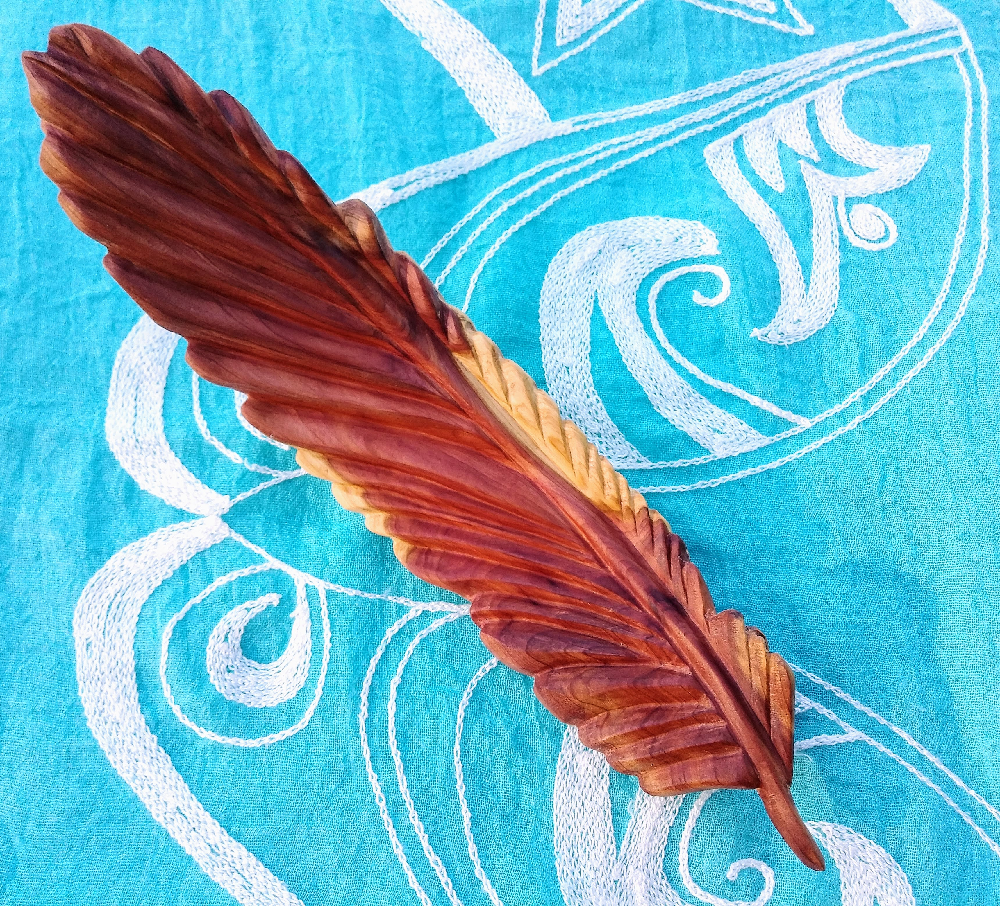
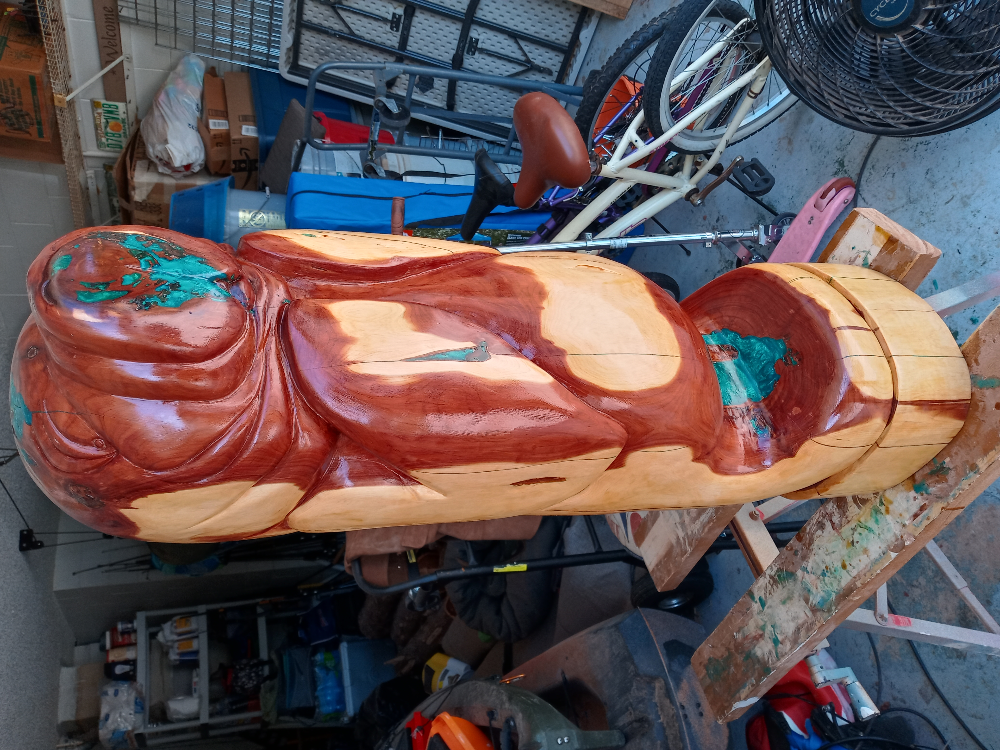
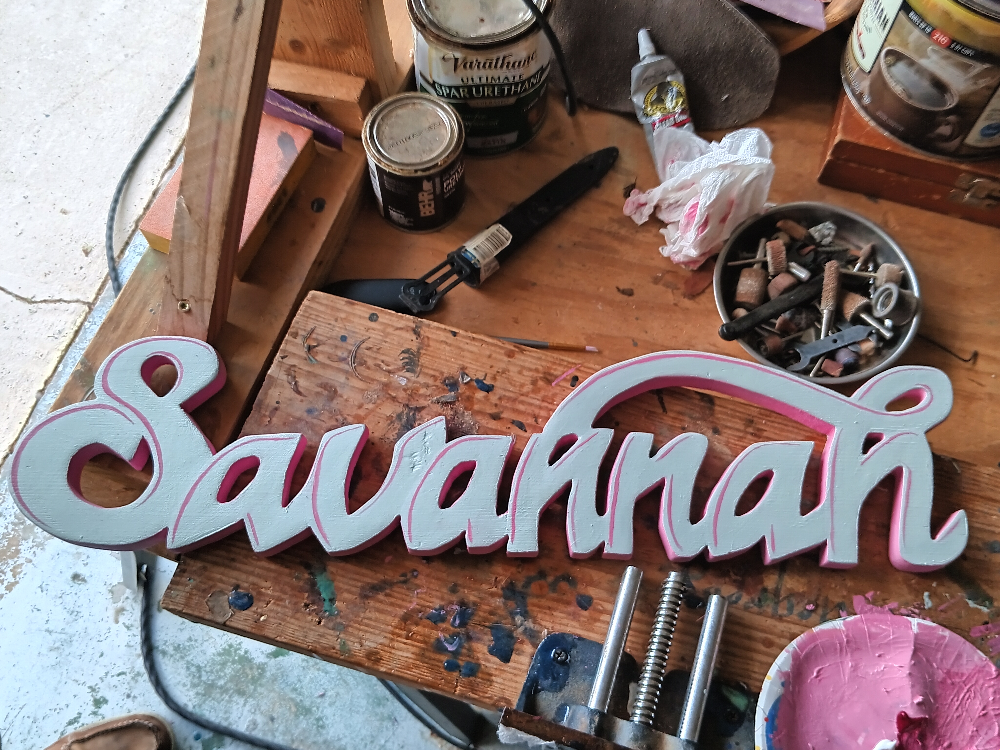

Archived Work
Feather Series
Early flowing carved feather studies exploring movement,
texture, and organic line work.


Refinished Work
Goose Refinish
Restoration and refinishing work focused on preserving
movement and character within an older carved form.

Private Collection
Hope and Joy
Warm cedar tones and flowing marine-inspired carving forms
emphasizing movement and emotional narrative.

Archived Work
Manatee Series
Florida wildlife carving studies focused on softness,
rounded form, and underwater movement.

Archived Work
Swirling Seas
Marine-inspired spiral carving work exploring fluidity,
current motion, and layered natural texture.

Commissioned Work
Rucker 82nd Airborne
Military and commemorative carving work incorporating
stylized movement and layered carved relief.

Conceptual Work
Sister Octopus Cane
Functional sculptural exploration merging marine themes,
utility, and flowing carved organic forms.

Archived Work
Savannah
Character-driven carved work from the studio archive,
included as part of the broader historical body of work.